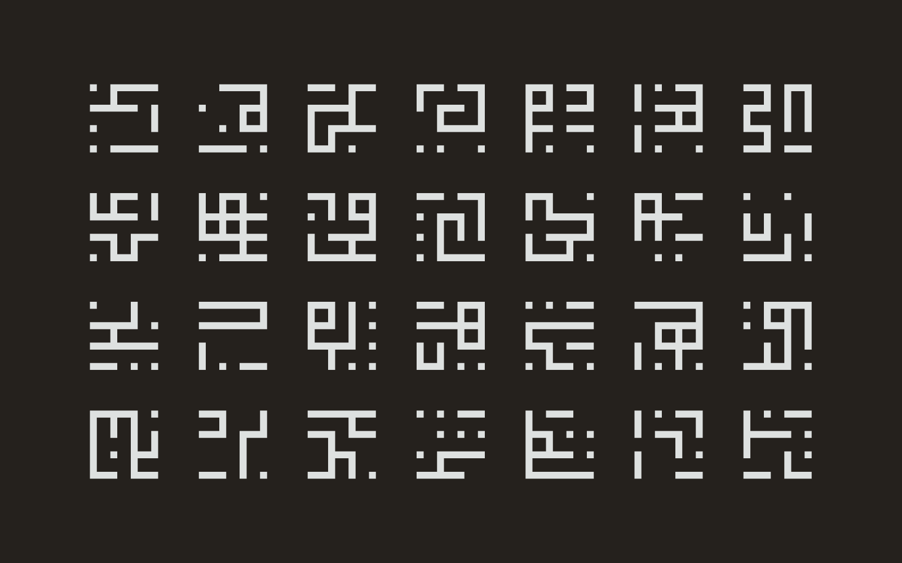
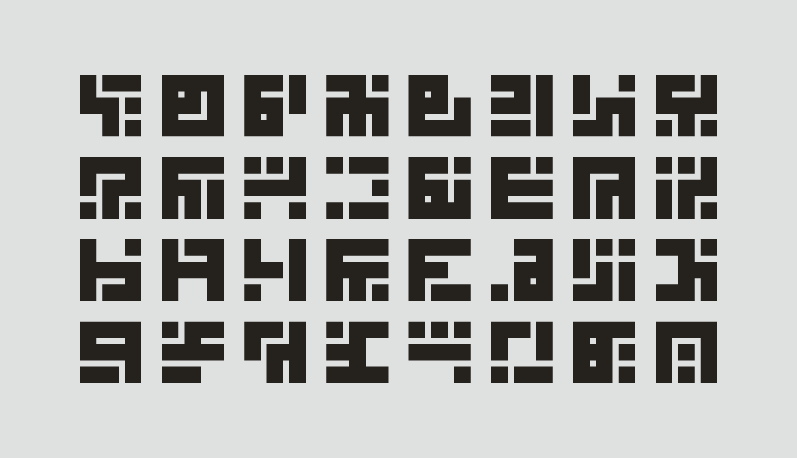

Procedurally-generated artworks (2017)
Asemic pictographs created with Processing and rendered with Adobe Illustrator. Related to the subsequent writing plots.
These procedural runes were also the basis for my typeface Chasmata.

